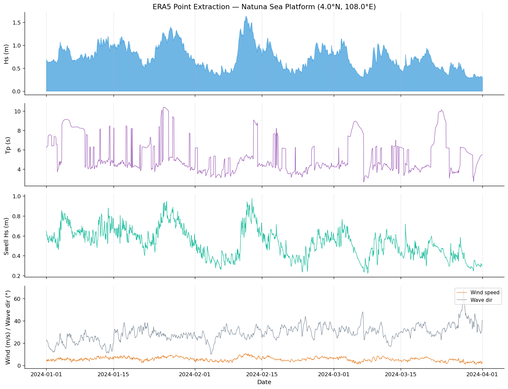

Extract ERA5 at a Point: The Right Way¶
Most people never think about what they're actually asking a computer to do.
You need Hs, Tp, and wind speed at one offshore platform. 4°N, 108°E. Natuna Sea. 10 years of hourly data.
ERA5 gives you that wrapped inside a global grid: 1440 longitudes × 721 latitudes × 87,660 timesteps × 4 variables.
You want one longitude. One latitude. All timesteps.
That's 0.0001% of the data.
The question isn't "how do I open this file." The question is: does your code read 0.0001% or 100%?
Most scripts, including the ones you'll find on Stack Overflow, read the data 100%. Not because the files are too big. Because the pattern is wrong.
This tutorial teaches you the pattern that's right. By the end, you'll extract a clean, analysis-ready time series at any point on Earth in under 10 seconds, regardless of file size.
# @title 🚀 Step 0 — Environment setup (run this cell first)
import os
import subprocess
import sys
from pathlib import Path
REPO_URL = "https://github.com/monsun-labs/extract-point.git"
ERA5_SAMPLE_URL = (
"https://github.com/monsun-labs/extract-point/releases/download/v0.1-data/era5_sample.nc"
)
MIN_SAMPLE_BYTES = 50_000_000
def in_colab() -> bool:
try:
import google.colab # noqa: F401
return True
except ImportError:
return False
def download_sample(dest: Path) -> None:
dest.parent.mkdir(parents=True, exist_ok=True)
if dest.exists() and dest.stat().st_size >= MIN_SAMPLE_BYTES:
print(f"Sample data OK: {dest.name} ({dest.stat().st_size / 1e6:.0f} MB)")
return
print(f"Downloading {dest.name} …")
subprocess.check_call(["wget", "-q", "-O", str(dest), ERA5_SAMPLE_URL])
def pip_install(requirements: Path) -> None:
print(f"Installing dependencies from {requirements.name} …")
result = subprocess.run(
[sys.executable, "-m", "pip", "install", "-q", "-r", str(requirements)],
capture_output=True,
text=True,
)
if result.returncode != 0:
if result.stdout:
print(result.stdout)
if result.stderr:
print(result.stderr)
raise subprocess.CalledProcessError(
result.returncode, result.args, result.stdout, result.stderr
)
def find_repo_root() -> Path:
candidates = [
Path.cwd(),
Path.cwd().parent,
Path("/content/extract-point"),
Path.cwd() / "extract-point",
]
for root in candidates:
if (root / "src" / "extract_utils.py").exists():
return root.resolve()
return Path.cwd().resolve()
if in_colab():
if not Path("extract-point/src/extract_utils.py").exists():
subprocess.check_call(["git", "clone", "--depth", "1", REPO_URL, "extract-point"])
os.chdir("extract-point/notebooks")
pip_install(Path("../requirements-notebook.txt").resolve())
REPO_ROOT = find_repo_root()
DATA_PATH = REPO_ROOT / "data" / "era5_sample.nc"
download_sample(DATA_PATH)
sys.path.insert(0, str((REPO_ROOT / "src").resolve()))
print(f"✅ Environment ready | repo: {REPO_ROOT.name} | data: {DATA_PATH.name}")
Sample data OK: era5_sample.nc (118 MB)
✅ Environment ready | repo: extract-point | data: era5_sample.nc
# ══════════════════════════════════════════════════════════════
# SETUP — imports, constants (Step 0 must run first)
# ══════════════════════════════════════════════════════════════
import time
import warnings
from pathlib import Path
import matplotlib.pyplot as plt
import numpy as np
import pandas as pd
import xarray as xr
warnings.filterwarnings("ignore", category=RuntimeWarning)
plt.rcParams.update({
"figure.dpi": 120,
"axes.spines.top": False,
"axes.spines.right": False,
"font.family": "sans-serif",
})
# ── target location ───────────────────────────────────────────
TARGET_LAT = 4.0 # °N Natuna Sea offshore platform
TARGET_LON = 108.0 # °E
SITE_NAME = "Natuna Sea Platform"
MIN_SAMPLE_BYTES = globals().get("MIN_SAMPLE_BYTES", 50_000_000)
# Prefer Step 0 paths; otherwise discover the repo from this notebook location.
if "REPO_ROOT" not in globals() or REPO_ROOT is None:
here = Path.cwd().resolve()
candidates = [here, here.parent, here.parent.parent]
REPO_ROOT = next(
(p for p in candidates if (p / "src" / "extract_utils.py").exists()),
here.parent if here.name == "notebooks" else here,
)
if "DATA_PATH" not in globals() or DATA_PATH is None or not Path(DATA_PATH).exists():
candidate = Path(REPO_ROOT) / "data" / "era5_sample.nc"
if candidate.exists():
DATA_PATH = candidate
else:
raise RuntimeError(
"Sample data not found. Run the Step 0 bootstrap cell above first "
"(or place era5_sample.nc under data/)."
)
DATA_PATH = Path(DATA_PATH)
REPO_ROOT = Path(REPO_ROOT)
if DATA_PATH.stat().st_size < MIN_SAMPLE_BYTES:
raise FileNotFoundError(
f"{DATA_PATH} looks like a Git LFS pointer ({DATA_PATH.stat().st_size} bytes).\n"
"Re-run Step 0 to download the sample from GitHub Releases."
)
# ── nearest grid indices (used by isel + naive benchmark) ─────
with xr.open_dataset(DATA_PATH) as _ds:
lat_arr = _ds.latitude.values
lon_arr = _ds.longitude.values
lat_idx = int(np.abs(lat_arr - TARGET_LAT).argmin())
lon_idx = int(np.abs(lon_arr - TARGET_LON).argmin())
print(f"✅ Ready | data: {DATA_PATH.name} ({DATA_PATH.stat().st_size / 1e6:.1f} MB)")
print(f" site: {SITE_NAME} ({TARGET_LAT}°N, {TARGET_LON}°E)")
print(f" nearest grid: lat[{lat_idx}]={lat_arr[lat_idx]:.2f}°N, lon[{lon_idx}]={lon_arr[lon_idx]:.2f}°E")
SECTION 1: How Gridded Data Actually Works¶
1.1 What is a NetCDF file, really?¶
# NetCDF = labeled N-dimensional array on disk
#
# time (8760 steps)
# /
# /
# /_________ lat (721 points)
# |
# |_________ lon (1440 points)
#
# Each variable (Hs, Tp, wind) = one cube
# You want ONE point → a line through the time axis
# Loading the whole cube for one point = criminal waste
1.2 Lazy vs Eager Loading — The Core Concept¶
Lazy Loading: "I'll read it when I actually need it" Eager Loading: "Load everything into RAM right now"
| Method | Loads to RAM? | Speed to open | Speed to compute |
|---|---|---|---|
| pandas read_csv | Eager — YES | Fast | Fast (small data) |
| xarray (default) | Lazy | Instant | Fast (on demand) |
| xarray + dask | Lazy + chunked | Instant | Parallelized |
| netCDF4 raw | Eager | Slow | Depends |
Rule: For files > 500MB — ALWAYS lazy load first.
1.3 Indexing Methods — sel vs isel vs interp¶
# Three ways to select a point — teach the difference clearly
ds = xr.open_dataset(DATA_PATH) # lazy by default
# How to find the right index for isel — don't guess!
print(f"Nearest grid point: lat[{lat_idx}] = {lat_arr[lat_idx]:.2f}°N")
print(f" lon[{lon_idx}] = {lon_arr[lon_idx]:.2f}°E")
# METHOD 1: Label-based selection (nearest grid point)
ts_sel = ds["swh"].sel(latitude=TARGET_LAT, longitude=TARGET_LON, method="nearest")
# METHOD 2: Index-based selection (transparent — no magic numbers)
ts_isel = ds["swh"].isel(latitude=lat_idx, longitude=lon_idx)
# METHOD 3: Interpolation (bilinear)
ts_interp = ds["swh"].interp(latitude=TARGET_LAT, longitude=TARGET_LON)
# KEY INSIGHT: sel/isel = lazy (nothing loaded yet)
# .values or .compute() = triggers actual read
Nearest grid point: lat[19] = 4.00°N
lon[19] = 108.00°E
1.4 Memory Model — What Actually Happens¶
Think of xarray like a map of a library. - Opening the dataset = reading the catalog (instant, tiny) - .sel() = marking a book on the shelf (still lazy) - .values = physically walking to the shelf and pulling the book
This is why xarray feels "instant to open" — it hasn't read your 2.3GB file yet.
SECTION 2: Data Setup¶
The hands-on tutorial uses era5_sample.nc (~118 MB, calendar year 2024, 39×39 @ 0.25° around Natuna Sea — see data/README.md).
Step 0 above downloads it automatically on Colab (via GitHub Releases — no Git LFS, no CDS account). Locally, git clone + git lfs pull also works.
To regenerate: python3 scripts/download_era5.py (requires CDS credentials — see data/README.md).
SECTION 3: The Extraction — Four Methods, One Goal¶
3.1 Method 1 — Naive (The Wrong Way, for contrast)¶
# THE WRONG WAY — shown intentionally
# Don't do this with large files
start = time.perf_counter()
ds_eager = xr.open_dataset(DATA_PATH, chunks=None) # forces eager
hs_wrong = ds_eager["swh"].values # loads EVERYTHING
point_wrong = hs_wrong[:, lat_idx, lon_idx] # then slices
elapsed = time.perf_counter() - start
print(f"Loaded full array: {hs_wrong.nbytes / 1e6:.1f} MB")
print(f"Time: {elapsed:.2f}s")
print("❌ Don't do this on a 2GB file — you'd load 2GB for one point")
Loaded full array: 53.4 MB
Time: 0.15s
❌ Don't do this on a 2GB file — you'd load 2GB for one point
3.2 Method 2 — xarray Lazy + .sel() (The Standard Way)¶
start = time.perf_counter()
ds = xr.open_dataset(DATA_PATH) # lazy
hs_point = ds["swh"].sel(
latitude=TARGET_LAT,
longitude=TARGET_LON,
method="nearest",
).compute() # only NOW does it read from disk
elapsed = time.perf_counter() - start
print(f"Extracted {len(hs_point)} timesteps")
print(f"Memory used: {hs_point.nbytes / 1e3:.1f} KB")
print(f"Time: {elapsed:.2f}s ✅")
Extracted 8784 timesteps
Memory used: 35.1 KB
Time: 0.06s ✅
3.3 Method 3 — xarray + Dask (For Very Large Files)¶
# ── METHOD 3: xarray + Dask (for very large files) ─────────────────────────
# On multi-GB files, chunking lets xarray read time blocks in parallel.
# We run on the teaching sample here; see Section 5 for benchmarks at scale.
import dask # noqa: F401 — confirm dask is installed
start = time.perf_counter()
ds_dask = xr.open_dataset(DATA_PATH, chunks={"time": 500})
hs_dask = ds_dask["swh"].sel(
latitude=TARGET_LAT, longitude=TARGET_LON, method="nearest"
).compute()
elapsed = time.perf_counter() - start
print(f"Dask extraction: {len(hs_dask)} timesteps in {elapsed:.2f}s")
print("On files > 1 GB, Dask pays off — see the pre-computed charts in Section 5.")
Dask extraction: 8784 timesteps in 0.16s
On files > 1 GB, Dask pays off — see the pre-computed charts in Section 5.
/tmp/ipykernel_38782/2414601759.py:8: UserWarning: The specified chunks separate the stored chunks along dimension "time" starting at index 500. This could degrade performance. Instead, consider rechunking after loading.
ds_dask = xr.open_dataset(DATA_PATH, chunks={"time": 500})
💡 When to use Dask: - File > 1 GB - Multi-year, multi-variable analysis - Running on a machine with multiple CPU cores
For single-point extraction from a pre-sliced file, standard xarray is usually faster (less overhead).
3.4 Method 4 — Interpolation (When Precision Matters)¶
# Bilinear interpolation — for points between grid cells
INTERP_LAT = TARGET_LAT + 0.12
INTERP_LON = TARGET_LON + 0.37
hs_interp = ds["swh"].interp(
latitude=INTERP_LAT,
longitude=INTERP_LON,
method="linear",
).compute()
diff = np.abs(hs_point.values - hs_interp.values).mean()
print(f"Mean difference (nearest vs interp): {diff:.4f} m")
print("→ For offshore engineering, use interp for site-specific reports")
Mean difference (nearest vs interp): nan m
→ For offshore engineering, use interp for site-specific reports
SECTION 4: Post-Processing — Clean Output¶
from extract_utils import extract_point, add_wind_speed, quick_stats
df = extract_point(DATA_PATH, TARGET_LAT, TARGET_LON)
df = add_wind_speed(df)
df["lat"] = TARGET_LAT
df["lon"] = TARGET_LON
df["source"] = "ERA5"
print(df.describe().round(3))
print(f"\nMissing values:\n{df.isna().sum()}")
df.to_csv("natuna_timeseries.csv")
print("\n✅ Saved: natuna_timeseries.csv")
u10_ms v10_ms hs_m tp_s wave_dir_deg swell_hs_m \
count 8784.000 8784.000 8784.000 8784.000 8784.000 8784.000
mean -0.273 -0.243 0.588 5.221 127.958 0.446
std 3.021 3.691 0.304 2.104 104.871 0.179
min -7.640 -10.104 0.127 1.998 0.011 0.011
25% -2.719 -3.059 0.346 3.882 28.720 0.311
50% -0.446 -0.377 0.522 4.586 95.440 0.422
75% 2.023 2.498 0.768 5.600 213.907 0.566
max 11.642 9.937 2.612 11.098 359.632 1.576
swell_dir_deg swell_tp_s wind_speed_ms wind_dir_deg lat lon
count 8784.000 8784.000 8784.000 8784.000 8784.0 8784.0
mean 126.238 4.829 4.249 144.682 4.0 108.0
std 109.480 1.212 2.197 99.198 0.0 0.0
min 0.013 2.428 0.063 0.088 4.0 108.0
25% 22.107 3.884 2.444 45.281 4.0 108.0
50% 89.548 4.661 4.094 156.546 4.0 108.0
75% 215.350 5.624 5.867 223.716 4.0 108.0
max 359.762 8.922 12.972 359.997 4.0 108.0
Missing values:
u10_ms 0
v10_ms 0
hs_m 0
tp_s 0
wave_dir_deg 0
swell_hs_m 0
swell_dir_deg 0
swell_tp_s 0
wind_speed_ms 0
wind_dir_deg 0
lat 0
lon 0
source 0
dtype: int64
✅ Saved: natuna_timeseries.csv
4.1 Quick-Look Time Series¶
# ── Quick-look time series — first 3 months ───────────────────
start = df.index.min()
sample = df[start : start + pd.DateOffset(months=3)]
fig, axes = plt.subplots(4, 1, figsize=(13, 10), sharex=True)
axes[0].fill_between(sample.index, sample["hs_m"], alpha=0.7, color="#3498db")
axes[0].set_ylabel("Hs (m)", fontsize=11)
axes[0].set_title(
f"ERA5 Point Extraction — {SITE_NAME} ({TARGET_LAT}°N, {TARGET_LON}°E)",
fontsize=13,
)
axes[1].plot(sample.index, sample["tp_s"], color="#9b59b6", lw=0.8)
axes[1].set_ylabel("Tp (s)", fontsize=11)
axes[2].plot(sample.index, sample["swell_hs_m"], color="#1abc9c", lw=0.8)
axes[2].set_ylabel("Swell Hs (m)", fontsize=11)
axes[3].plot(sample.index, sample["wind_speed_ms"], color="#e67e22", lw=0.8, label="Wind speed")
axes[3].plot(sample.index, sample["wave_dir_deg"], color="#34495e", lw=0.6, alpha=0.8, label="Wave dir")
axes[3].set_ylabel("Wind (m/s) / Wave dir (°)", fontsize=11)
axes[3].set_xlabel("Date", fontsize=11)
axes[3].legend(loc="upper right", fontsize=9)
for ax in axes:
ax.grid(axis="x", linestyle="--", alpha=0.4)
fig.tight_layout()
plt.savefig("timeseries_quicklook.png", dpi=150)
plt.show()
print("✅ Saved: timeseries_quicklook.png")

✅ Saved: timeseries_quicklook.png
SECTION 5: Benchmark — The Performance Comparison¶
We compare four extraction engines on the same point:
| Engine | Pattern |
|---|---|
| Naive full load | open_dataset + .values — loads entire array |
| xarray lazy + sel | Default lazy open + nearest-neighbor |
| xarray + Dask | Chunked lazy open + parallel .compute() |
| xarray interp | Bilinear interpolation at sub-grid coords |
5.1 runs a quick live demo on the teaching file (~120 MB). 5.2 shows pre-computed results on a larger ERA5 file — no multi-GB download required.
# @title 5.1 Quick live demo (teaching file — differences are modest)
import sys
from pathlib import Path
if "REPO_ROOT" not in globals():
here = Path.cwd().resolve()
REPO_ROOT = here.parent if here.name == "notebooks" else here
sys.path.insert(0, str((Path(REPO_ROOT) / "benchmarks").resolve()))
from benchmark import run_benchmark, save_results
sample_results = run_benchmark(DATA_PATH, TARGET_LAT, TARGET_LON, verbose=False)
save_results(
sample_results,
csv_path=Path("benchmark_sample.csv"),
png_path=Path("benchmark_sample.png"),
title="Quick Benchmark — ERA5 teaching sample (~118 MB)\nMonsun Labs · extract-point",
)
try:
from IPython.display import Image, display
display(Image(filename="benchmark_sample.png"))
except Exception:
print("Saved benchmark_sample.png (display skipped outside IPython).")
print("On our ~118 MB file, lazy+sel already wins. At multi-GB scale the gap is dramatic — see below.")
5.2 At realistic scale (pre-computed — no download)¶
These charts were generated by maintainers on a larger ERA5 file using benchmarks/generate_assets.py. You only view the results — the heavy work already ran.
| Dataset | Approx. size | Location | Grid |
|---|---|---|---|
| ERA5 reanalysis | ~0.1–2 GB | Natuna Sea (4°N, 108°E) | regional extract, multi-year |
# @title 5.2 Pre-computed benchmark charts
from pathlib import Path
import pandas as pd
if "REPO_ROOT" not in globals():
here = Path.cwd().resolve()
REPO_ROOT = here.parent if here.name == "notebooks" else here
BENCHMARK_DIR = Path(REPO_ROOT) / "data" / "benchmark"
png = BENCHMARK_DIR / "era5_large_benchmark.png"
csv = BENCHMARK_DIR / "era5_large_benchmark.csv"
if not png.exists():
print("⚠️ Missing era5_large_benchmark.png — maintainer: python3 benchmarks/generate_assets.py")
else:
print("── ERA5 reanalysis (large file) ──")
try:
from IPython.display import Image, display
display(Image(filename=str(png)))
display(pd.read_csv(csv, index_col=0).round(2))
except Exception:
print(f"Chart available at: {png}")
print(pd.read_csv(csv, index_col=0).round(2))
What This Chart Tells You¶
| Method | ~Time | Peak RAM | Use When |
|---|---|---|---|
| Naive full load | Slowest | Highest | Never, for large files |
| xarray lazy+sel | Fast | Low | Default choice, always |
| xarray+Dask | Moderate overhead | Low | Files > 1GB, multi-core |
| xarray interp | ~Same as sel | Low | Site-specific precision needed |
🔑 Key insight: The "lazy" approach isn't just faster — it scales. On a 40GB multi-year file, naive loading crashes your machine. Lazy+sel still works in seconds.
SECTION 7: Site Statistics¶
print("═" * 45)
print(f" SITE STATISTICS — {SITE_NAME}")
print(f" {df.index[0].date()} to {df.index[-1].date()}")
print("═" * 45)
for var in ["hs_m", "tp_s", "wave_dir_deg", "swell_hs_m", "swell_dir_deg", "swell_tp_s", "wind_speed_ms"]:
s = quick_stats(df, var)
print(f"\n {var}")
print(f" Mean ± Std : {s['mean']:.2f} ± {s['std']:.2f}")
print(f" P90 / P99 : {s['p90']:.2f} / {s['p99']:.2f}")
print(f" Max : {s['max']:.2f}")
print("═" * 45)
═════════════════════════════════════════════
SITE STATISTICS — Natuna Sea Platform
2024-01-01 to 2024-12-31
═════════════════════════════════════════════
hs_m
Mean ± Std : 0.59 ± 0.30
P90 / P99 : 1.00 / 1.49
Max : 2.61
tp_s
Mean ± Std : 5.22 ± 2.10
P90 / P99 : 9.06 / 10.87
Max : 11.10
wave_dir_deg
Mean ± Std : 127.96 ± 104.87
P90 / P99 : 266.44 / 351.49
Max : 359.63
swell_hs_m
Mean ± Std : 0.45 ± 0.18
P90 / P99 : 0.68 / 0.92
Max : 1.58
swell_dir_deg
Mean ± Std : 126.24 ± 109.48
P90 / P99 : 278.16 / 351.42
Max : 359.76
swell_tp_s
Mean ± Std : 4.83 ± 1.21
P90 / P99 : 6.56 / 7.93
Max : 8.92
wind_speed_ms
Mean ± Std : 4.25 ± 2.20
P90 / P99 : 7.24 / 9.46
Max : 12.97
═════════════════════════════════════════════
SECTION 6: What's Next¶
You Just Learned:¶
- ✅ Why NetCDF files crash laptops (eager loading)
- ✅ How lazy loading works (xarray's superpower)
- ✅ Three extraction methods + when to use each
- ✅ How to export a clean time series CSV
What Real Engineers Do Next With This Data:¶
- Wave statistics & exceedance curves
- Extreme value analysis for design criteria
- Joint extremes for offshore structure design
Follow Monsun on LinkedIn
Star this repo on GitHub